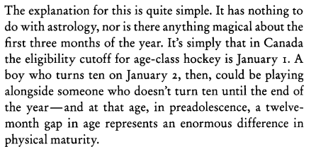
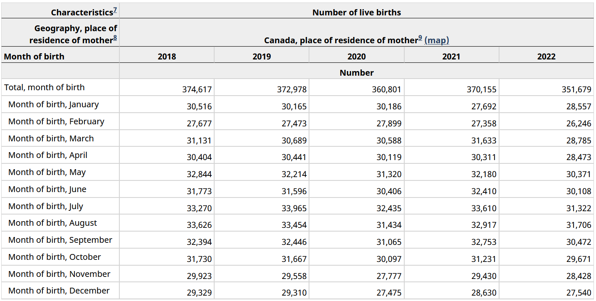

In the first chapter Malcolm Gladwell’s Outliers he discusses how in Canadian Junior Hockey there is a higher likelihood for players to be born in the first quarter of the year. In his words:

Because these kids are older within their year they make all the important teams at a young age which gets them better resources for skill development and so on.
While it seems clear that more players are born in the first few months of the year, what isn’t explored is whether or not this would be expected. Maybe more people in Canada in general are born earlier in the year.
I will explore whether Gladwell’s result is expected as well as whether this is still true in today’s NHL for Canadian-born players.
To answer these questions I will download data on birth rates from Statistics Canada as well as player roster data from the NHL’s API.
This analysis will leverage the httr package to download the data, tidyverse for data manipulation, and ggtext/ggimage/scales for visualization.
library(tidyverse)
library(httr)
library(scales)
library(ggimage)
library(ggtext)
Section 1: What is the distribution of births by month in Canada?
Gladwell’s thesis is that you see more Canadian Junior hockey players born earlier in the year because of the way that cut-offs are set for Youth Hockey. I think that he is correct but what if most people in Canada are born in the beginning of the year. Then this might be representative of the population rather than an outlier effect.
Information about births by month in Canada can be found at Statistics Canada.

Initially I had tried to web-scrape the table using rvest but could not figure out a way to deal with the “Number” row. Since the data could be downloaded as a CSV file my alternative solution was to use httr to send a call to the download link to grab the file. The URL was found by using the inspect option in Firefox when clicking the download link.
canada_raw <- GET('https://www150.statcan.gc.ca/t1/tbl1/en/dtl!downloadDbLoadingData-nonTraduit.action?pid=1310041501&latestN=0&startDate=19910101&endDate=20220101&csvLocale=en&selectedMembers=%5B%5B1%5D%2C%5B%5D%2C%5B1%5D%5D&checkedLevels=1D1%2C1D2') %>%
content()
The GET() command sends the request to the server and the content() function returns the results. Without the content() function there is a lot of additional information about the call such as headers, request url, etc.
The raw data contains many columns that are either duplicative or unnecessary for this analysis:
| 1991 |
Canada, place of residence of mother |
2016A000011124 |
Total, month of birth |
Number of live births |
Number |
223 |
units |
0 |
v21400536 |
1.1.1 |
403816 |
NA |
NA |
NA |
0 |
| 1992 |
Canada, place of residence of mother |
2016A000011124 |
Total, month of birth |
Number of live births |
Number |
223 |
units |
0 |
v21400536 |
1.1.1 |
399109 |
NA |
NA |
NA |
0 |
I pulled the data for 1991 through 2022 and each year has a total row as well as a row for each individual month. To clean up this data I filter out the total rows with str_detect(), keep only the REF_DATE for the year, extract the month using str_extract and keep the VALUE which is the actual number of births.
canada_births <- canada_raw %>%
filter(!str_detect(`Month of birth`, 'Total')) %>%
transmute(
REF_DATE,
MONTH = str_extract(`Month of birth`, 'Month of birth, (\\w+)', 1),
VALUE
) %>%
group_by(MONTH) %>%
summarize(country_births = sum(VALUE)) %>%
mutate(country_pct = country_births/sum(country_births))
Then the distribution can be calculated by dplyr functions. The true distribution of birth month in Canada vs. the expected distribution if every day had an equal chance is shown below:
canada_births %>%
transmute(
`Canada %` = country_pct,
`Expected % from Days in Month` = case_when(
MONTH %in% c('April', 'June', 'September', 'November') ~ 30/365,
MONTH == 'February' ~ 28/365,
TRUE ~ 31/365,
),
`Difference` = `Canada %` - `Expected % from Days in Month`,
month_id = factor(MONTH, levels = c('January', 'February', 'March', 'April',
'May', 'June', 'July', 'August',
'September', 'October', 'November', 'December'))
) %>%
gather(lbl, value, -month_id) %>%
spread(month_id, value) %>%
mutate(
lbl = factor(lbl, levels = c('Canada %', 'Expected % from Days in Month', 'Difference')),
across(January:December, ~percent(.x, accuracy = .1))) %>%
arrange(lbl) %>%
kable(col.names = c("", names(.)[-1]))
| Canada % |
8.0% |
7.5% |
8.5% |
8.4% |
8.8% |
8.5% |
8.9% |
8.7% |
8.7% |
8.4% |
7.8% |
7.8% |
| Expected % from Days in Month |
8.5% |
7.7% |
8.5% |
8.2% |
8.5% |
8.2% |
8.5% |
8.5% |
8.2% |
8.5% |
8.2% |
8.5% |
| Difference |
-0.5% |
-0.1% |
0.0% |
0.2% |
0.3% |
0.3% |
0.4% |
0.2% |
0.5% |
-0.1% |
-0.4% |
-0.7% |
At first glance, Canadians seem less likely to be born in the beginning of the year (particularly January and February) than from random distribution. They’re also less likely to be born in the end of the year.
Let’s see what the Canadian NHL players look like:
Section 2: What is the difstribution of births by month for Canadian NHL players?
To get the information about the NHL players I will use httr to query the NHLs API. My original version of this analysis used the nhlapi package which is on CRAN. But the NHL changed their API at some point in the last few months so that package no longer functioned.
Getting the 2023-2024 team rosters can be done through the API endpoint https://api-web.nhle.com/v1/roster/{team}/20232024 where {team} is a three-character code representing an individual team. To get the rosters for each team I need to first get the codes for each team.
This is going to involve a bunch of JSON manipulation which is new to me so their is probably a more elegant solution.
All information on NHL teams can be retrieved from the https://api.nhle.com/stats/rest/en/team endpoint. Using the same GET() / content() set from the prior section I can get all the team information
teams <- GET('https://api.nhle.com/stats/rest/en/team') %>%
content()
This comes back as a list with two items, “data” which contains all the useful information and “total” which contains the number of elements returned in “data”. I just need the “data” piece.
teams <- teams %>%
.[['data']]
Now “teams” is a list with 59 elements with each element containing information (id, franchiseId, fullName, legaugeId, rawTricode, triCode) about a team.
teams[1:3] %>% jsonlite::toJSON(auto_unbox = T) %>% jsonlite::prettify()
## [
## {
## "id": 11,
## "franchiseId": 35,
## "fullName": "Atlanta Thrashers",
## "leagueId": 133,
## "rawTricode": "ATL",
## "triCode": "ATL"
## },
## {
## "id": 34,
## "franchiseId": 26,
## "fullName": "Hartford Whalers",
## "leagueId": 133,
## "rawTricode": "HFD",
## "triCode": "HFD"
## },
## {
## "id": 31,
## "franchiseId": 15,
## "fullName": "Minnesota North Stars",
## "leagueId": 133,
## "rawTricode": "MNS",
## "triCode": "MNS"
## }
## ]
##
Ultimately I want to restructure this set of nested lists into a rectangular format. The way I’ll do this is create a tibble of list columns using tibble() and then tidyr::unnest_wider to turn each element of a list-column into its own column.
teams <- teams %>%
tibble(data = .) %>%
unnest_wider(data)
Now everything is in a much more legible format:
| 11 |
35 |
Atlanta Thrashers |
133 |
ATL |
ATL |
| 34 |
26 |
Hartford Whalers |
133 |
HFD |
HFD |
| 31 |
15 |
Minnesota North Stars |
133 |
MNS |
MNS |
That was all just to get the 3-character codes needed to actually get the rosters. Since a separate call is made to the Roster endpoint for each team this is a good opportunity to create a function. Then I can use purrr::map_dfr to iterate through the team codes to combine all the rosters together.
For the function, it’ll take a team code for input and extract the player’s first name, last name, birth date, and birth country.
The data structure returned from the Roster endpoint is a list with elements for forwards, defensemen, and goalies, Then for each player within the data looks like:
GET(glue::glue('https://api-web.nhle.com/v1/roster/NJD/20232024')) %>%
content() %>%
.[['forwards']] %>%
.[[1]] %>%
jsonlite::toJSON(auto_unbox = T, pretty = T) %>%
jsonlite::prettify()
## {
## "id": 8479414,
## "headshot": "https://assets.nhle.com/mugs/nhl/20232024/NJD/8479414.png",
## "firstName": {
## "default": "Nathan"
## },
## "lastName": {
## "default": "Bastian"
## },
## "sweaterNumber": 14,
## "positionCode": "R",
## "shootsCatches": "R",
## "heightInInches": 76,
## "weightInPounds": 205,
## "heightInCentimeters": 193,
## "weightInKilograms": 93,
## "birthDate": "1997-12-06",
## "birthCity": {
## "default": "Kitchener"
## },
## "birthCountry": "CAN",
## "birthStateProvince": {
## "default": "ON"
## }
## }
##
To get only the data I want, I’ll (1) pass a team code into the function to call to the API with GET() and content(), (2) use flatten() to remove the level of forwards, defensemen, and goalies to have all the players as one nested list, (3) turn the data into a tibble of list-columns with tibble(), and (4) use the tidyr::hoist() function to pull only the items I want from the structure. Finally, I use transmute to add the 3-character input to the results and to exclude the data list-column.
get_roster <- function(team){
GET(glue::glue('https://api-web.nhle.com/v1/roster/{team}/20232024')) %>%
content() %>%
flatten() %>%
tibble(data = .) %>%
hoist('data',
'firstName' = list('firstName', 1L),
'lastName' = list('lastName', 1L),
'birthDate',
'birthCountry'
) %>%
transmute(team = team, firstName, lastName, birthDate, birthCountry)
}
Within hoist(), the construction of list('firstName', 1L) is to avoid having to pull the “default” sub-item within firstName. This way simply grabs the value of the first element within the firstName item. Since birthDate and birthCountry have no sub-items there is no need to do that for those fields.
Finally to get all the players from all the teams I use purrr::map_dfr() to iterate through the team codes and run my function. There is a filter to remove any items with missing firstName fields because the Team endpoint returns information for all historical teams (e.g, Atlanta Thrashers, Hartford Whalers, etc.). Since these teams are not active in 2023-2024 they return information but the fields I want don’t populate.
all_roster <- map_dfr(teams$triCode, get_roster) %>%
filter(!is.na(firstName))
Now we have a dataset of the 774 players in the NHL. This number is slightly larger than the expected number of NHL players (736 = 23 players * 32 teams) so there is likely a nuance to how a roster player is determined but it shouldn’t matter for this analysis.
Since I only want to look at Canadian players because I have no idea if the same cut-offs that apply in Canada apply in other countries in the world. I’ll also do some data cleanup on birth months and calculate the player distribution.
canada_players <- all_roster %>%
filter(birthCountry == 'CAN') %>%
mutate(
mob = month(ymd(birthDate), label = T, abbr = F),
mob_id = month(ymd(birthDate))
) %>%
count(mob_id, mob, name = "players") %>%
mutate(player_pct = players/sum(players))
Now we have the distribution of birth months for the 314 Canadian NHL players
Section 3: Putting it all together
The last section is to combine the Canada birth month data from Section 1 with the Canadian NHL player from Section 2 and make a pretty visualization.
First I combining the data and create a field for the percentage of births you’d expect if every day was equally likely (ex. if January has 31 days then there is a 31/365 chance of being randomly born in January):
combined <- canada_players %>%
left_join(canada_births, by = c('mob' = 'MONTH')) %>%
#Put in random value
mutate(
random = case_when(
mob_id %in% c(4, 6, 9, 11) ~ 30/365,
mob_id %in% c(1, 3, 5, 7, 8, 10, 12) ~ 31/365,
mob_id == 2 ~ 28/365
)
)
For the visualization I’m going to use the ggimage package to use icons of the Canadian flag and the NHL logo. This package can render a URL so I’ll create variables for those URLs.
NHL_ICON <- "https://pbs.twimg.com/media/F9sTTAYakAAkRv6.png"
CANADA_ICON <- "https://cdn-icons-png.flaticon.com/512/5372/5372678.png"
Finally, a combination of ggplot, ggtext, and ggimage is used to create the visualization.
ggplot(combined, aes(x = fct_reorder(mob, -mob_id))) +
geom_line(aes(y = random, group = 1), lty = 2, color = 'grey60') +
geom_linerange(aes(ymin = country_pct, ymax = player_pct)) +
geom_image(aes(image = NHL_ICON, y = player_pct), size = .08) +
geom_image(aes(image = CANADA_ICON, y = country_pct), size = .07) +
geom_text(aes(label = percent(player_pct, accuracy = .1),
y = if_else(player_pct > country_pct, player_pct + .004, player_pct - .004))) +
geom_text(aes(label = percent(country_pct, accuracy = .1),
y = if_else(country_pct > player_pct, country_pct + .004, country_pct - .004))) +
annotate(
'curve',
xend = 2.3,
x = 1.5,
yend = .084,
y = .10,
curvature = .25,
arrow = arrow(
length = unit(7, "pt"),
type = "closed"
)) +
annotate(
'richtext',
x = 1,
y = .105,
label = "The grey line is the expected % of births<br />if birth month was completely random",
size = 4
) +
scale_y_continuous(labels = percent) +
coord_flip() +
labs(x = "Month of Birth", y = "Percentage of Births (%)",
title = "Are Canadian NHL Players More Likely to be Born Early in the Year?",
subtitle = 'Comparing the distribution of birth months between Canadian NHL players and Canada in general ',
caption = glue::glue("<img src = {NHL_ICON} width = '15' height=' 15' /> - Canadian NHL Players Birth Month Distribution <br />
<img src = {CANADA_ICON} width = '15' height=' 15' /> - Canadian Birth Month (1991-2022) Distribution")
) +
theme_light() +
theme(
text = element_text(family = 'Asap SemiCondensed', size = 14),
plot.title.position = 'plot',
plot.title = element_markdown(),
plot.caption = element_markdown()
)

Visually it looks pretty clear that there are more Canadian NHL players born in January/February than expected and fewer players born in August through the end of the year. May and July are interesting but I don’t have an intuition for why more NHL players might be born in those months.
For a more stats-y perspective. A chi-sq test can be used to see if the distribution of the Canadian NHL players is different than Canada in general. In the following code, x is the number of Canadian NHL players born in each month and p is the expected proportion based on the distribution of birth months for Canada as a whole.
broom::tidy(chisq.test(x = combined$players, p = combined$country_pct))
## # A tibble: 1 × 4
## statistic p.value parameter method
## <dbl> <dbl> <dbl> <chr>
## 1 25.6 0.00752 11 Chi-squared test for given probabilities
The p-value of <.01 means that we can reject the null hypothesis that they are the same distribution.
So it seems that Malcolm Gladwell’s thesis in Outliers still holds true in today’s NHL among Canadian players.